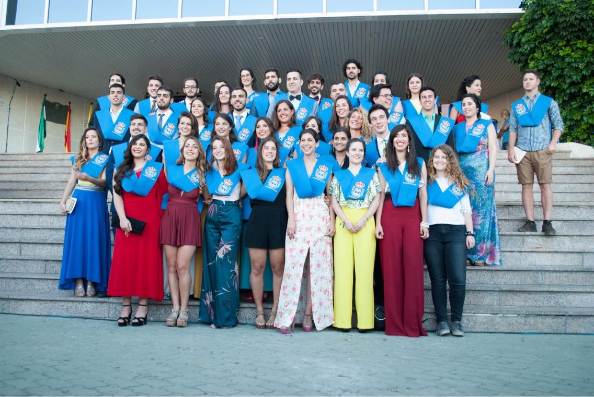
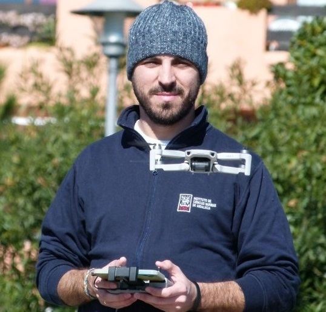
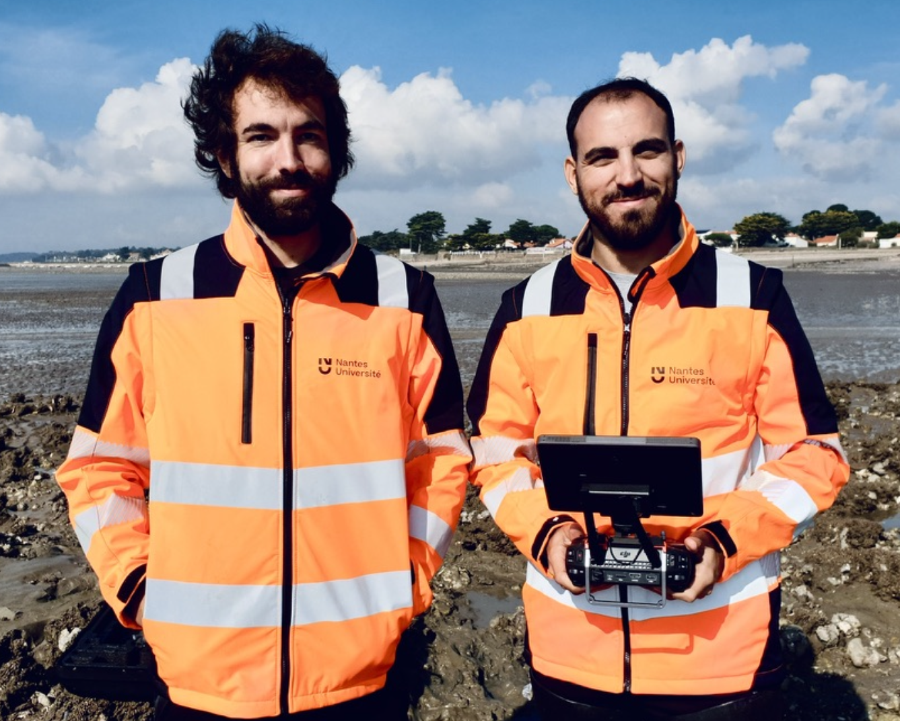
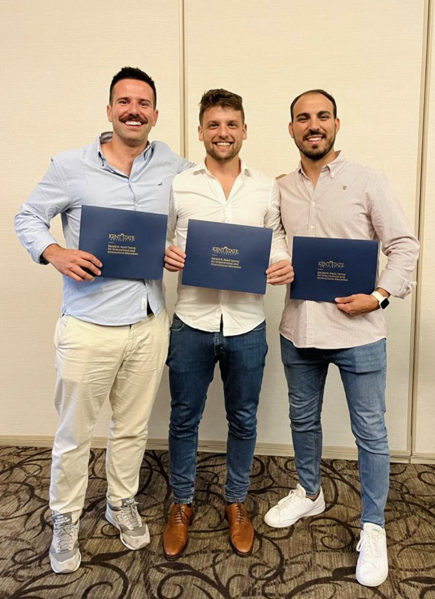
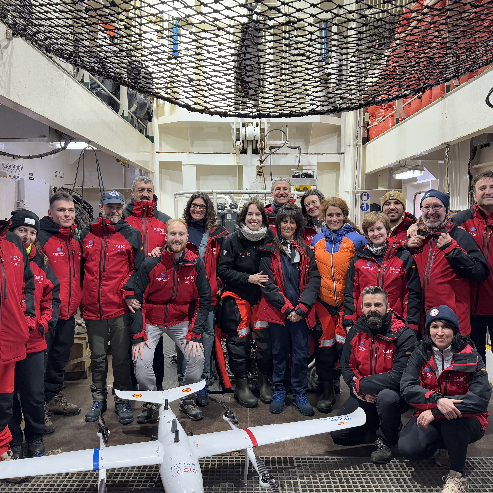

Hey, I'm happy you are here
Thanks for stopping by!
My Background

Prior to joining ICMAN-CSIC, I completed a Bachelor's degree in Marine Sciences and a Master's degree in Oceanography at the University of Cádiz (UCA, Spain). In 2017, during the third year of my Bachelor's program, I began collaborating on scientific research with Dr. Laura del Río in the Department of Earth Sciences. Later, I received a Collaboration Scholarship to support my Master's thesis project under the supervision of Professor Dr. Luis Barbero. For this project, I used drone technology equipped with thermal sensors to detect submarine groundwater discharges in coastal areas.
In 2020, I began my scientific career at the Institute of Marine Sciences of Andalusia (ICMAN-CSIC, Spain), where I pursued a PhD focused on developing remote sensing tools and using sensors onboard drones to study coastal environmental processes. Funded by the PhD Fellowship for University Staff Training (FPU, ref: FPU19/04557), I worked under Dr. Antonio Tovar-Sánchez and Dr. Gabriel Navarro. During this period, I specialized in researching various marine ecosystems and characterizing diverse coastal environmental processes, such as seagrass meadows, penguin colonies, and algal blooms. I participated in six research projects, including two polar projects (PiMetAn and DICHOSO), and published 17 peer-reviewed articles, ten as first author, in leading journals in Remote Sensing, Oceanography, and Multidisciplinary Sciences. I completed my PhD in July 2024, graduating with the highest honors, summa cum laude.




I also shared my work with broader audiences at national and international conferences and expanded my training through three research stays abroad. From February to June 2022, at the University of Malta under the supervision of Dr. Adam Gauci, I enhanced my Python programming skills specifically for drone operations over aquatic surfaces. Later, from October to November 2022, I was at the University of Nantes, collaborating with Dr. Laurent Barillé on multispectral monitoring of oyster farming areas and the study of microphytobenthos in estuarine systems. Finally, from September 2023 to February 2024, I developed Python-based techniques to improve marine optics algorithms for water quality studies using multispectral drone sensors at the University of Maryland. This research stay was funded by a Fulbright scholarship and supervised by Dr. Greg Silsbe.
Upon completing my PhD, I began my postdoctoral stage as a contract researcher under the Momentum CSIC program, with the DIGIDRON project (Development of emerging digitalization and data processing technologies for studying coastal environmental phenomena using drone-mounted sensors). In this project, I work on integrating artificial intelligence with data collected via drone-mounted sensors, which has allowed me to receive training through specialized courses in machine learning and deep learning applied to remote sensing and geosciences.



During this period, at the beginning of 2025, I had the privilege of participating in my first Antarctic campaign through the DICHOSO project. I embarked on the research vessel BIO Hespérides to cross the Drake Passage from Ushuaia (Argentina), arriving on January 9th at the Spanish Antarctic Base Gabriel de Castilla on Deception Island (South Shetland Islands, Maritime Antarctica). There, we assessed the role of the island's volcanic nature and chinstrap penguin colonies in greenhouse gas emissions, both directly into the atmosphere and through the Southern Ocean. On February 9th, we departed the base for a research campaign aboard the vessel B/O Sarmiento de Gamboa between Deception and Livingston Islands, collecting water samples from surface and deeper layers using oceanographic instruments. After crossing the Drake Passage once more, we disembarked on February 24th in Punta Arenas (Chile), concluding one of the most enriching and remarkable experiences of my professional career and personal life.
Following this campaign, throughout 2025, my scientific career accelerated significantly. I participated in international events such as the ELLIS Summer School 2025, FICE2025, and NASA PACE HACKWEEK 2025, which allowed me to expand my network and initiate valuable collaborations leading to multiple scientific publications. One of the most rewarding experiences was participating in the ESA OTC25, taking part in a campaign aboard the tall ship Staatsraad Lehmkuhl across the Arctic, Atlantic, and Mediterranean as part of the One Ocean Expedition, working closely with leading experts in oceanography and remote sensing. I also became a member of the coordinating committee of the POLARCSIC Hub and a Core Member of one of the Antarctica Insync working groups.


At the end of 2025, I spent a month at the University of Eastern Finland in Joensuu, together with my colleague Dr. Miguel Villoslada, further advancing the development of AI-derived algorithms for upscaling from drone to satellite remote sensing. The beginning of 2026 provided me with another opportunity to return to Antarctica for the first campaign of the POLAROMICS project, during which I revisited Deception and Livingston Islands over the course of a month. During this time, I was awarded my first international project as Principal Investigator, the AMIGA project (POLARIN Transnational Access Call 2025), and secured the opportunity to hire a trainee researcher through the JAE Intro ICU POLARCSIC program as part of the ABANTI project.